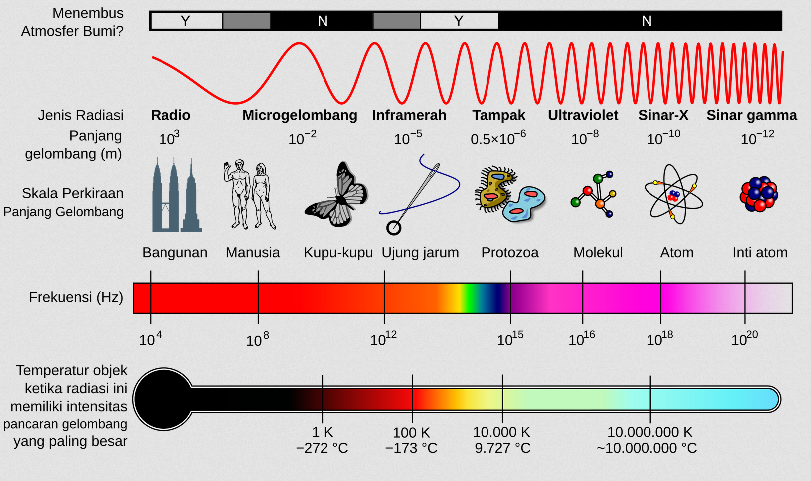

# Gelombang Elektromagnetik - Teori Maxwell - Spektrum GEM, Manfaat dan Bahayanya --- ### Teori Maxwell - Pada 1864, fisikawan Inggris, James Clerk Maxwell, mengemukakan teori yang menyebutkan bahwa cahaya adalah rambatan gelombang yang dihasilkan oleh kombinasi medan listrik dan medan magnetik. Gelombang yang dihasilkan oleh medan listrik dan medan magnetik ini disebut *gelombang elektromagnetik*. --- - Gelombang elektromagnetik merupakan gelombang transversal yang dapat merambat dalam ruang hampa. Hal inilah yang menyebabkan radiasi cahaya matahari dapat mencapai permukaan bumi. --- - Maxwell menyadari bahwa jika suatu arus listrik dialirkan maju-mundur, arus itu dapat menimbulkan gelombang elektromagnetik yang berubah-ubah yang memancar keluar dengan kecepatan yang sangat tinggi. Perhitungan-perhitungannya menunjukkan bahwa gelombang elektromagnetik itu memancar pada kecepatan cahaya. Berdasarkan hal ini, Maxwell menyimpulkan bahwa cahaya itu sendiri adalah bentuk gelombang elektromagnetik. --- ### Kecepatan Gelombang Elektromagnetik ###### $$c=\frac{1}{\sqrt{\mu_0\varepsilon_0}}=3\times 10^8$$ Keterangan: - *c* = kecepatan GEM - *ε<sub>0</sub>* = permitivitas hampa - *μ<sub>0</sub>* = permeabilitas ruang hampa --- sementara hubungan kecepatan, frekuensi dan panjang gelombang adalah ###### $$c=\lambda f$$ Keterangan: - *c* = kecepatan GEM - *λ<sub>0</sub>* = panjang gelombang (m) - *f* = frekuensi (Hz) --- #### Spektrum GEM  --- - Semakin besar panjang gelombang, semakin jauh daya jangkaunya - Semakin pendek panjang gelombang, semakin besar daya tembusnya. - Panjang gelombang cahaya tampak, antara 400-700 nm. --- ### Manfaat dan Bahaya GEM - Sinar Gamma: untuk pengobatan, dapat menyebabkan terpapar radiasi. - Sinar X: untuk rontgen, mendeteksi benda asing, dapat menyebabkan terpapar radiasi jika sering digunakan. - Sinar UV: fotosintesis, dapat menyebabkan kanker kulit. - Cahaya tampak: membantu penglihatan - Sinar Inframerah: untuk remote control. - Gelombang mikro: microwave - Gelombang radio: telekomunikasi --- ###### $$V_{ef}=\sqrt{\frac{{V_{maks}}^2}{2}}=\frac{V_{maks}}{\sqrt{2}}$$ ###### $$I_{ef}=\sqrt{\frac{{I_{maks}}^2 }{2}}=\frac{I_{maks}}{\sqrt{2}}$$ Keterangan: - *V<sub>ef</sub>* = Tegangan efektif (V) - *V<sub>maks</sub>* = Tegangan maksimum (V) - *I<sub>ef</sub>* = Arus efektif (A) - *I<sub>maks</sub>* = Arus maksimum (A) ---